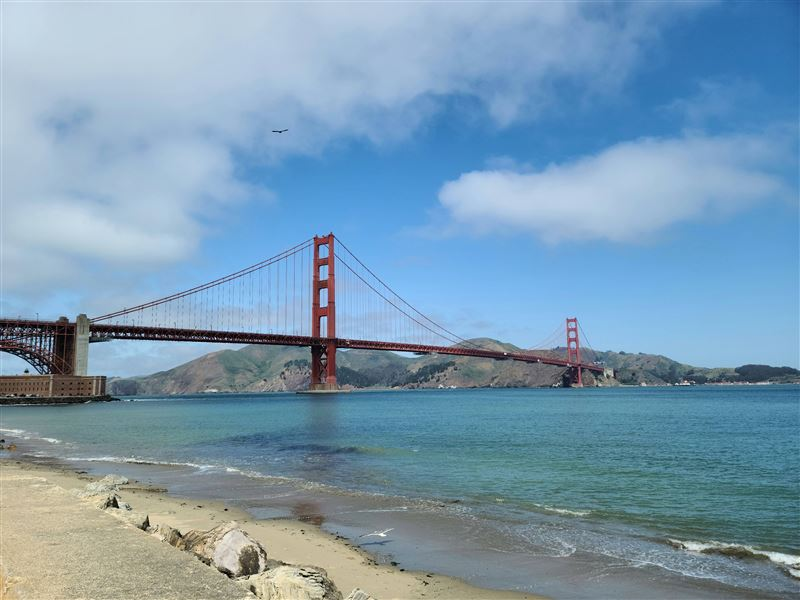
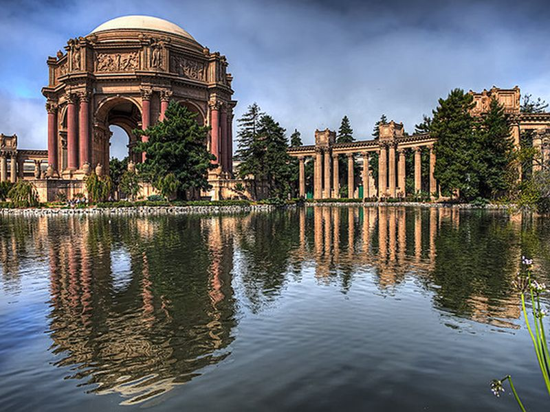
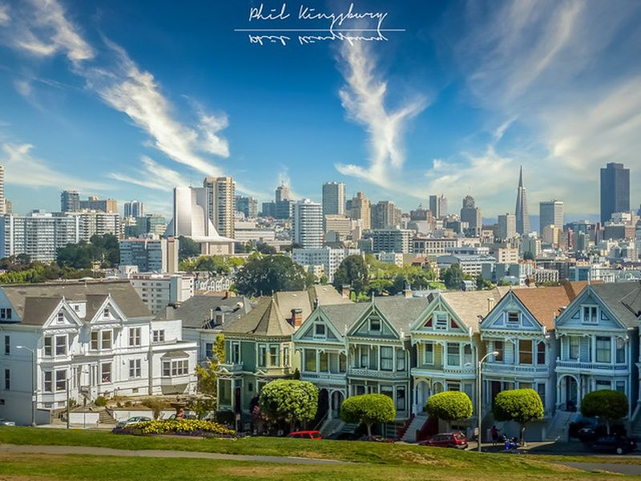
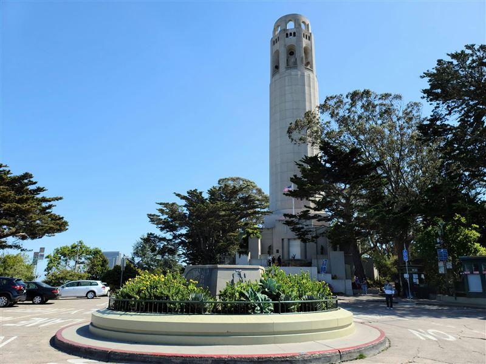
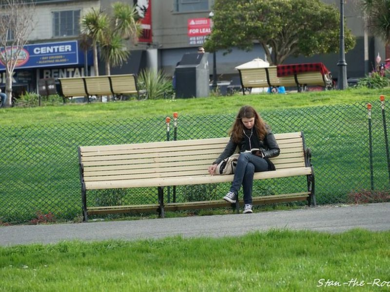
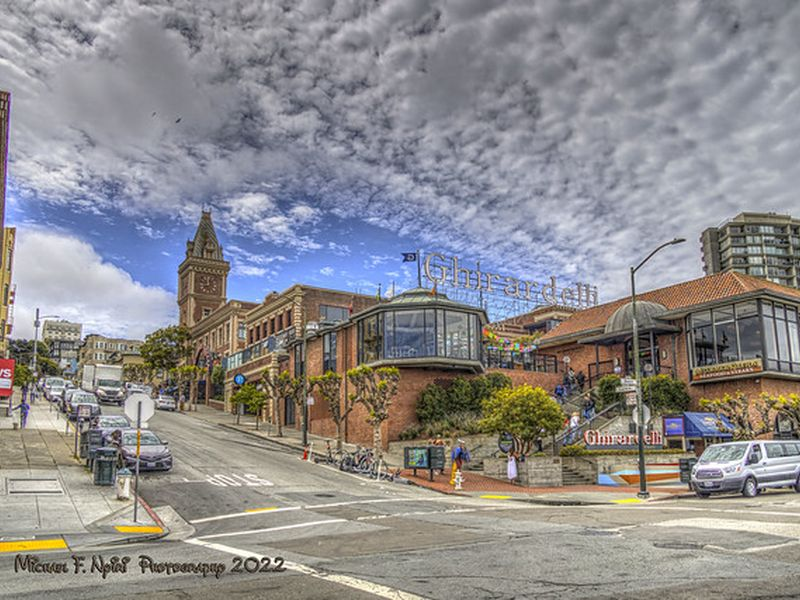
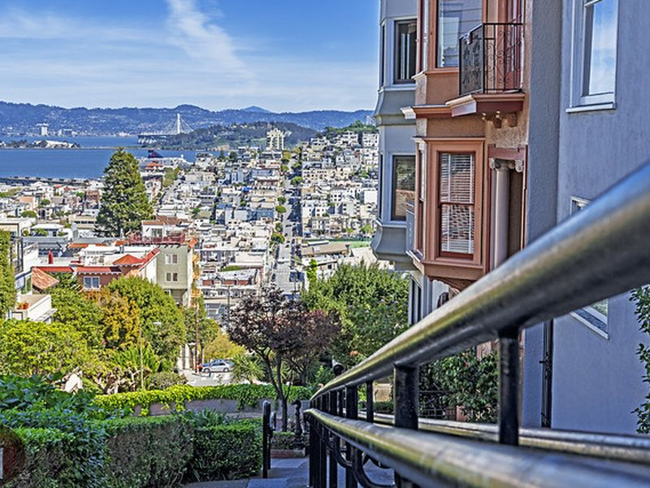
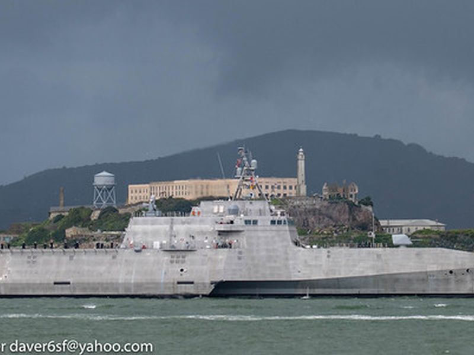
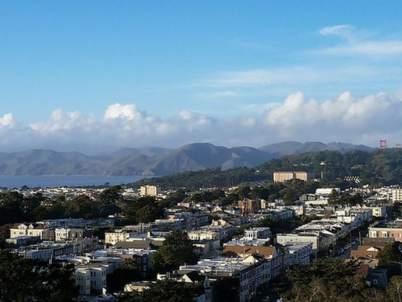

Explore San Francisco, CA
A Brief History
San Francisco grew from a Spanish mission and presidio at the Golden Gate into a major Pacific port after the 1849 gold rush drew migrants from across the Americas, Europe, and Asia. Cable cars, Victorian neighborhoods, and harbor expansion followed 19th-century wealth, while the 1906 earthquake and fire reshaped much of the center. Shipyards, counterculture movements, and later technology industries added new layers.
Attractions Map
Top Sights & Activities

Golden Gate Bridge
The Golden Gate Bridge opened in 1937 as a suspension span linking San Francisco to Marin County across the strait. Its Art Deco towers and International Orange paint became symbols of the city. Pedestrian walkways on the east side offer views of the bay, Alcatraz, and the Pacific entrance.

Palace of Fine Arts
The Palace of Fine Arts was built for the 1915 Panama-Pacific International Exposition in the Marina District. Bernard Maybeck designed the colonnade and rotunda beside a lagoon. The structure was rebuilt in the 1960s and remains a public monument to the fair's Beaux-Arts architecture.

The Painted Ladies
The Painted Ladies are a row of Victorian houses on Steiner Street facing Alamo Square. Built in the 1890s, they illustrate post-fire residential architecture on the city's western hills. The grassy square provides a common viewpoint toward downtown over the colorful facades.

Coit Tower
Coit Tower stands on Telegraph Hill and was completed in 1933 with funds bequeathed by Lillie Hitchcock Coit. Its murals depict Depression-era California life inside the cylindrical shaft. An elevator rises to an observation deck with views over the bay and downtown skyline.

San Francisco Maritime National Historical Park
San Francisco Maritime National Historical Park preserves historic vessels and waterfront buildings at Hyde Street Pier. Exhibits cover Pacific Coast seafaring, fishing, and port labor. Boarding passes allow access to selected ships and the visitor center on the Fisherman's Wharf waterfront.

Ghirardelli Square
Ghirardelli Square occupies a former chocolate factory near Fisherman's Wharf. Converted in the 1960s into shops and restaurants, the brick complex preserves industrial architecture tied to Domingo Ghirardelli's 19th-century confectionery business and later waterfront tourism.

Lombard St
Lombard Street between Hyde and Leavenworth is known for eight sharp hairpin turns on a steep Russian Hill block. The brick-lined curves were designed in 1922 to reduce the grade for vehicles. Flower beds and hedges line the one-way descent used by motorists and pedestrians.

Ferry Building
The Ferry Building opened in 1898 as a terminal for bay ferries before bridge construction reduced water traffic. Its clock tower faces the Embarcadero along the waterfront. The restored hall now houses a public market with regional food vendors and views toward the Bay Bridge.

de Young Museum
The de Young Museum in Golden Gate Park houses collections of American art, textiles, and works from Africa, Oceania, and the Americas. A copper-clad building by Herzog and de Meuron replaced earlier structures damaged by earthquake. Galleries and a tower overlook the park and city beyond.